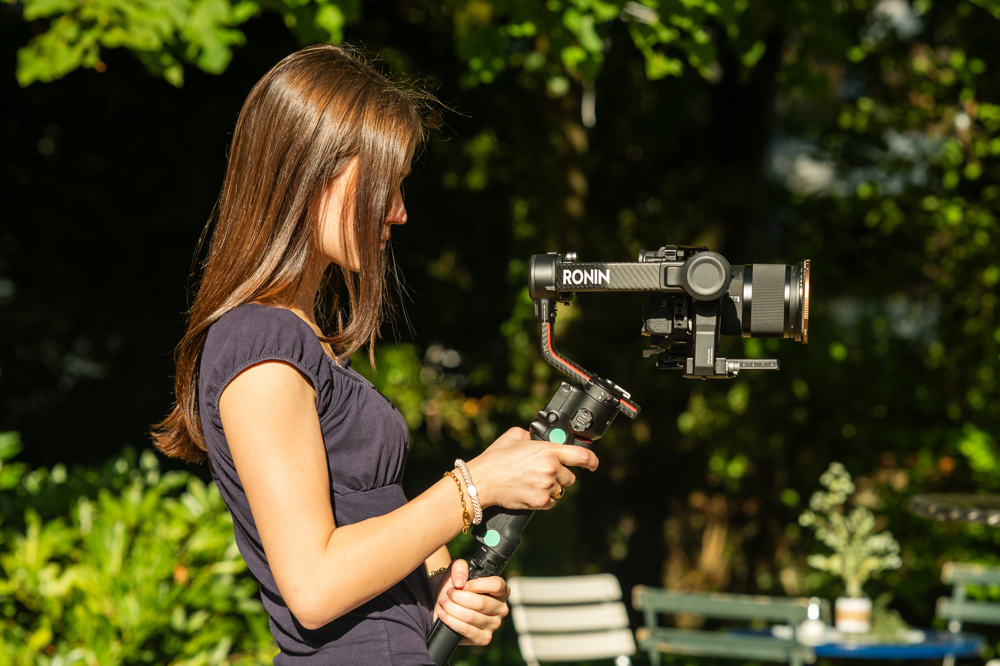
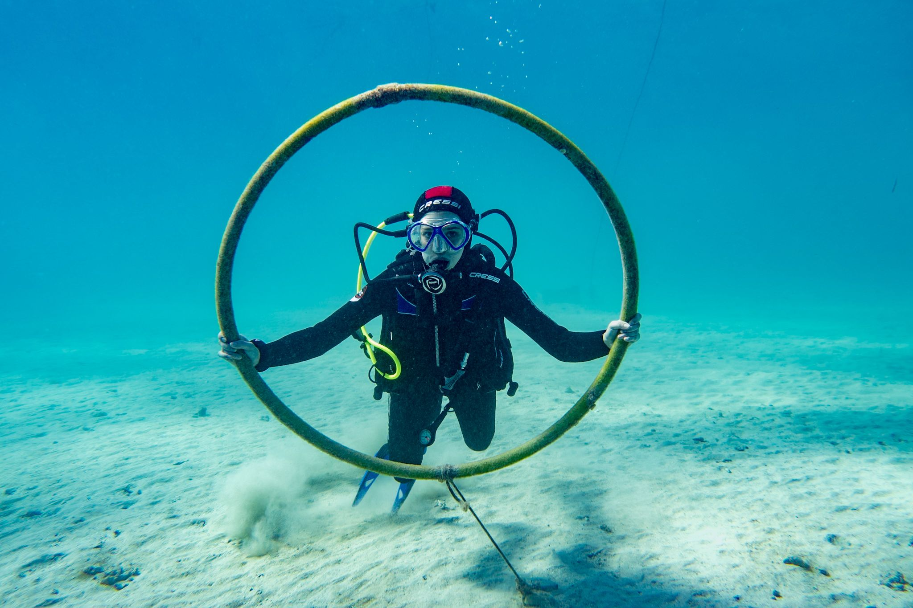

Wer ich bin
Ich bin Kaya, im 3. Lehrjahr als Mediamatik bei Swisscom. Design und Bewegtbild faszinieren mich, weil ich damit Ideen zu etwas realem machen kann.
Nebenbei bin ich sportlich sehr aktiv: 9 Jahre Geräteturnen mit Einzelwettkämpfen, heute Gruppenwettkämpfe im TV, dazu seit 5 Jahren Vertikaltuch als Ausgleich zum Büroalltag.
Meine Ferien verbringe ich am liebsten am Meer, seit 2020 mit Tauchschein.
Funfacts
- Sprachen
- Deutsch
- Englisch (Cambridge First, B2)
- Traum
- Mit Walhaien und Mantas schwimmen.
- Lieblingsfarbe
- Bordeaux / Rosa
- Hobbys
- Geräteturnen, Vertikaltuch, Tauchen, Reisen
Stärken
Zuverlässigkeit
Ich plane meine Arbeitsschritte, halte Deadlines ein und behalte den Überblick über meine Aufgaben.
Optimismus
Ich bin ein positiver, offener Mensch und sehe Feedback als Chance für Weiterentwicklung.
Motivation
Ich bin stets motiviert, Neues zu lernen und bestehendes Wissen zu erweitern.
Ehrgeiz
Ich möchte immer das bestmögliche Ergebnis erzielen und mich stetig weiterentwickeln.
Kreativität
Ich entwickle gerne kreative Designs, bringe Ideen ein und setze sie um.
Kommunikation
Ich spreche Probleme selbst an, frage nach Feedback und bin gerne im Austausch mit dem Team.
Skills
Einschätzung nach eigenem Kenntnisstand, 2026.
Projekte
Im Creative Studio habe ich mehrere Events mit der Kamera begleitet und gelernt, professionelle Fotos in unterschiedlichen Situationen aufzunehmen. Dabei sammelte ich Erfahrung in der Bildbearbeitung mit Lightroom und Photoshop sowie im Videoschnitt mit Premiere Pro.
Im Apps Team arbeitete ich mit dem Design-Team an verschiedenen Webdesigns. Dabei konnte ich mich intensiv mit UI- und UX-Design auseinandersetzen und wurde in sechs Monaten mit Figma vertraut.
Im Multimedia Office arbeitete ich hauptsächlich im Bereich Design. Ich erstellte verschiedene Illustrationen sowie Banner und Plakate für unterschiedliche Anwendungen.
Beim Team Motion arbeite ich vor allem an Videoaufträgen und begleite den gesamten Produktionsprozess — von der Preproduction über die Production bis zur Postproduction.
Bei [M]INI NET konne ich enorm viel lernen. meine selbständigkeit hat sich weiterentwickelt und mir wurde viel Verantwortung zugetraut. Miene Kamera kentnisse konnte ich stark erweitern.
Nach Bereich stöbern
Vier Bereiche, vier Unterseiten — klick dich rein.


Neben der Arbeit
Turnen, Vertikaltuch und Tauchen — mein Ausgleich zum Büroalltag.

Foto-/ Videografie
Tauchschein seit 2020